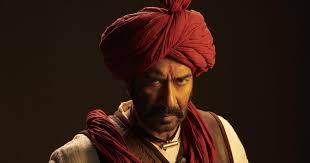

Generally, a movie review is a genre of art criticism and journalism. It is a complex overview, usually made by a professional critic, on films that have just been released, to help decide what film to watch.
Professional reviews differ from those made by amateurs; they are more structured, sharper, more detailed, but at the same time more compact in wording. In a professional movie review you will always find awareness of the film’s director(s), their previous works and previous filmmaker’s pictures, as well as a deep understanding of different film genres and classics for each of them, and filming techniques and modern trends.
Though, you can find a lot of reviews that are made by ordinary movie fans — and sometimes they can end up being more informative and useful than a professional one.

GUMNAAMI:
A thriller, directed by Srijit Mukherjee, involving the disappearence of the greatest Indian hero of all times,
Netaji Subhash Chandra Bose.Did he really die in the plane crash? Or is there something more to it? The film unearths the
mystery related to the disappearence,including hearings of the Mukherjee Commission (1999-2005).The film potrays Netaji's disappearence
in the rumoured plane crash and also his apparence in Russia and again returning back to India as "Gumnaami Baba". The
protagonist, Chandrachur Dhar(played by Anirban Bhattacharyya)helps us unearth the mystery of Netaji's disappearence,
showing strong evidence of the plane crash being false,

Netaji's presence as Gumnaami Baba in India. He faces debates, but
still keeps down his points in the hearing with justified proofs, involving comments of people, who had met Netaji
durig his stay as Gumnaami Baba.
The film keeps you glued to the screen with its every twist and turn, as the movie unfolds to dicover the
truth. Prosenjit Chatterjee playing in the role of Netaji Subhash Chandra Bose, is trully praise-worthy.
IMDb rates it 7.8 out of 10.
My ratings: 9.5 out of 10

CHHAPAAK:
A film , revealing before our eyes, the dangerous impacts of acid-attacks on women and making us aware of it.
When Malti becomes the victim of acid attack, then, inspite of her shouts, very gfew people came to rescue her at that
moment . And why she gets attacked ? Just because she didn't pay heed to a boy, who was constantly disturbing her.

She fails to gets justice at first, but that does not suppress her.This film is directed by Meghna Gukzar and is based
on the life of Laxmi Agarwal. watch the film to know- did Malti really get justice at the end ? What happened to Malti ?
There is a true saying that "all heroes don't wear capes"- Malti is such a hero, who inspires women all around the world.
The film keeps you glued to the screen with its every twist and turn, as the movie unfolds to dicover the
ultimate results. The film is a must watch.
IMDb rates it 5 out of 10.
My ratings: 9 out of 10

TANHAJI:THE UNSUNG WARRIOR:
Story of a valiant Marathi soldier, as he fought bravely against the Mughals to save his motherland from the
foreigners. The first part of the film shows young Tanhaji with his father and how his father helped shaping his ideals. The second part
Tanhaji as a true warrior, under the true guidance of Chatrapati Shivaji.

The film is directed by Om Raut. The VFX used in the film are amazing. The film is also available in many different languages and also in 2D
and 3D.
The film keeps you glued to the screen with its every twist and turn, as the movie unfolds to dicover the
valiant adventures and war-tactics of Tanhaji. IMDb rates it 7.9 out of 10.
My ratings: 8 out of 10
IMDb rates it 7.9 out of 10.
My ratings: 8 out of 10

PUPA:
A bengali art film, directed by Indrasis Acharya,that has won the hearts of several Bengalees through its simple storyline. The story
focuses on Subhro and how he faces struggles, when his father becomes ill. He faces the whole family-burden, depression, work-pressure, peer-
pressure,everything.His father appears like a burden to him during his illness, but can't speak out the blatant truth. The person who solves
the problem, yet bitterly will be Subhro's uncle but how ?

But
what will happen to Shubro and his family ? Did his father survive?
The film keeps you glued to the screen with its every twist and turn, as the movie unfolds to dicover the
real reasons amd also how Subhro overcomes his struggles.
IMDb rates it 7.8 out of 10.
My ratings: 8.5 out of 10

HARRY POTTER SERIES:
The hero of the magical world of Hogwarts, created by J.K.Rowling, Harry Potter, along with his friends Hermoine Granger,
Ronald Weasely, defeat the Dark Lord in the whole movie series. The film starts with Dumbledore's iconic lines "I should have known that
you would be here... Professor McGonagall., while delivering young Harry to the footsteps of her muggle(non-witch) aunt Petunia's house aunt at
Privet Drive. Thus begins the life of Harry Potter, under the unloving attitude of her aunt's family, knowing that his parents dies in a car
accident, not knowing the real truth, until Hagrid,

the gamekeeper of Hogwarts School of Witchcraft and Wizardry, reveals to Harry the real truth.
He also tells harry that he is a wizard and from there, step by step, incident by incident, begins Harry's magical life at Hogwarts. He faces the
Dark Lord Voldemort, but defeats him everytime,commencing step by step to the Second Battle of Hogwarts. What did happen at the end? Did harry
win at the end ? Who killed Harry's parents and why ? To find out, you have to watch the movies of the series.
My rating: 9.5 out of 10
IMDb rates :
My ratings: 9.5 out of 10
.gif)